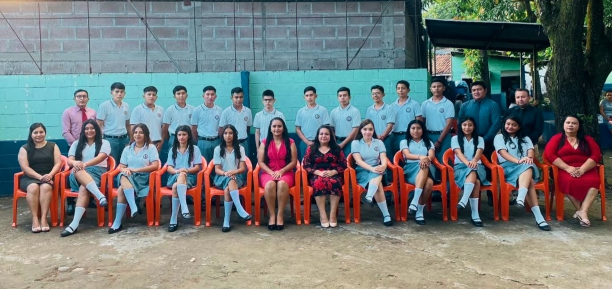
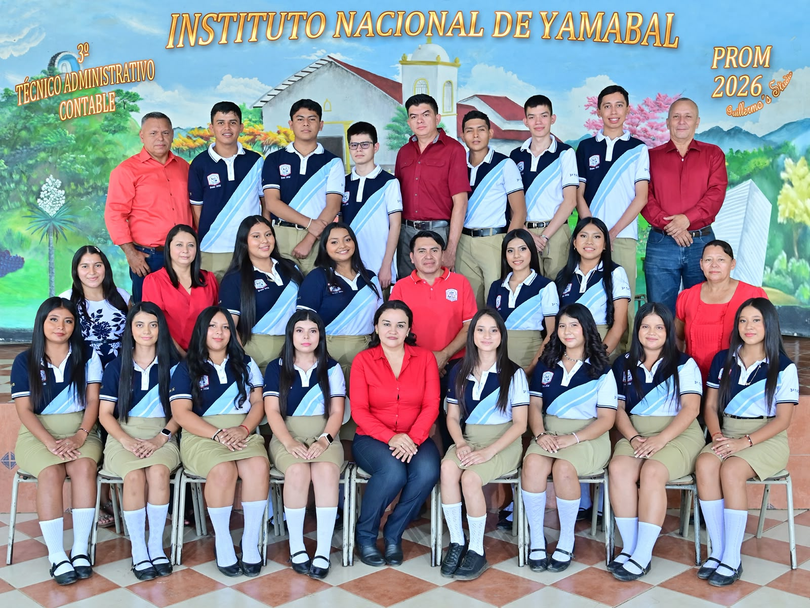
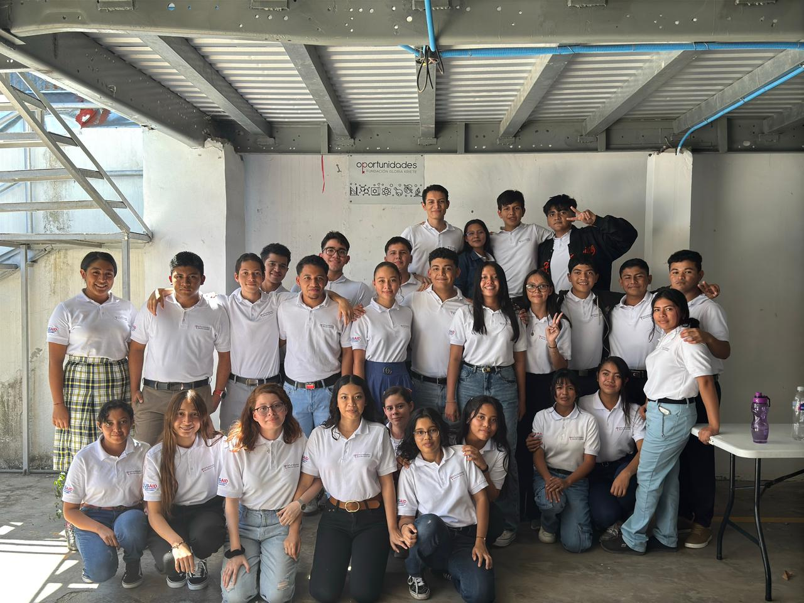

Generaciones
Cada etapa deja algo
Tres puntos marcados en el mismo recorrido: colegio, bachillerato y Oportunidades FGK.
Intro
Por qué guardo esto
Una etapa no se cierra para terminar: se cierra para que la siguiente pueda empezar. Guardar la foto de cada una es una forma de no olvidar de dónde vengo mientras construyo hacia dónde voy.
Tres fotos hasta ahora. Una por cada tramo recorrido.

Promoción 2023Liceo Cristiano Reverendo Juan Bueno
Sentados (de izquierda a derecha)
- Rosmery Perez — Docente
- Orfania Portillo
- Sthepany Gutierres
- Laura Perez
- Tatiana Lara
- Patricia Sanchez
- Ana Flores
- Irma Veliz
- Liliana Delgado
- Gabriela Portillo
- Stefania Urbina
- Melita Amaya
De pie (de izquierda a derecha)
- Eliseo Martinez — Docente
- Javier Perez
- Jhonatan Ortiz
- Carlos Martinez
- Indy Martinez
- Emerzon Perez — Docente
- Enoc Martinez
- Lazaro Chavez
- Josue Sorto
- Gerson Perez
- Alexander Hernández
- Enrique Martinez
- Wilber Andrade

Promoción 2026Instituto Nacional de Yamabal
Sentados (de izquierda a derecha)
- Sheily Diaz
- Damaris Vasquez
- Sahir Hernández
- Jenny Pineda
- Jacqueline Del Cid — Docente
- Keysi Guevara
- Yaritza Portillo
- Darlin Ortiz
- Stefani Delgado
Segunda fila (de izquierda a derecha)
- Olinda Perez — Registro Académico
- Lucia de Vasquez — Docente
- Orfania Portillo
- Stefania Canales
- Edwin Hernández — Director
- Odalis Melendez
- Liliana Delgado
- Alicia Mejia — Docente
De pie (de izquierda a derecha)
- Fredy Claros — Docente
- Cristian Fernandez
- Alexander Hernández
- Emerzon Vasquez
- Francisco Benitez — Docente
- Nelson Romero
- José Pineda
- Edwin Hernández
- Edenilson Vasquez — Docente

Class 2026Fundación Gloria Kriete
Sentados (de izquierda a derecha)
- Fidelia Portillo
- Vanesa Delgado
- Lesly Amaya
- Brenda Luna
- Gema Garcia
- Yulisa Hernández
De pie (de izquierda a derecha)
- Febe Herrera
- Daniel Gomez
- Exzzar Hernández
- Eduardo Romero
- Yesenia Lopez
- Angel Torres
- Kevin Sorto
- Matias Araujo
- Yuridia Claros
- Diego Romero
- Sandra Guevara
- Dredy Gutierres
- Efrain Galdamez
- Alexander Hernández
- Luis Herrera
Cada etapa abre la siguiente
Cerrar una etapa no es llegar. Es tener dónde apoyarse para la que viene.
Ir a contacto